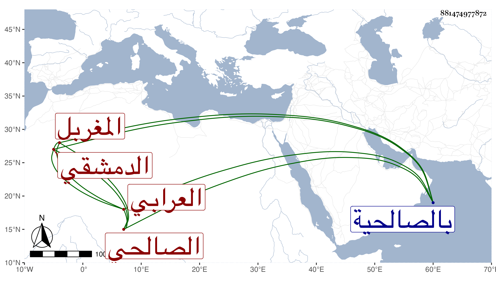

0902Sakhawi.DawLamic.ITO20230111-ara1.EIS1600.881474977872
Biography ID: 881474977872
498
عيسى بن عيسى بن محمد العرابي بفتح العين والراء المشددة المهملتين ثم موحدة الدمشقي الصالحي المغربل أبوه . سمع من المحب الصامت وأبي الهول الجزري جزءا فيه موافقات أحمد في عبد الوهاب بن عطاء وغيره جمع الضياء ومن رسلان الذهبي من جزء البيتوتة ، وحدث سمع منه الفضلاء وكان نقيب الوالي بالصالحية .
